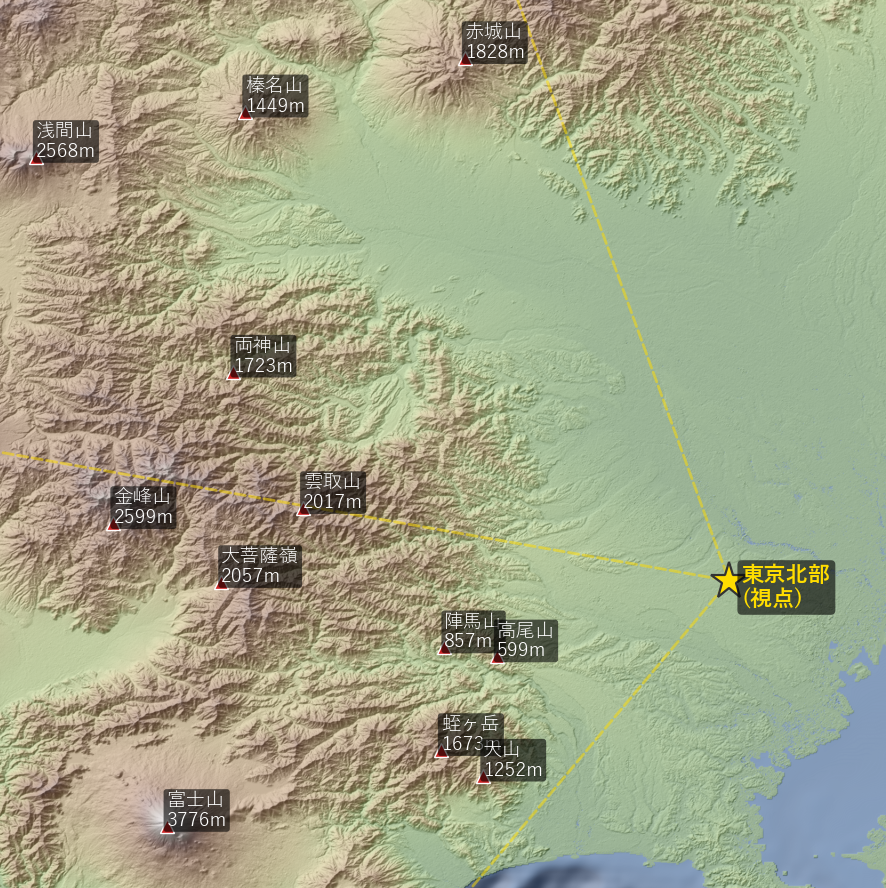

SRTM data courtesy of the U.S. Geological Survey and NASA
配信: AWS Terrain Tiles（Mapzen由来、CC BY 4.0）
山頂の名称・緯度・経度・標高は、OpenStreetMap のデータを Overpass API 経由で取得しました。
© OpenStreetMap contributors（ODbL）
大円距離・地球曲率・大気屈折補正（屈折係数 k = 0.13）を考慮して、地平線仰角プロファイルを算出しています。